install.packages(c("mice","VIM"))Practical 4 - Missing Data Analysis
Introduction
This practical is designed to enhance your understanding of missing data mechanism and imputation techniques.
By the end of the lab, you will have acquired the following skills:
- Perform missing data analysis with listwise deletion
- Distinguish between different types of single imputation and how to check their effectiveness
-
Perform multiple imputation using the
micealgorithm - Assess effectiveness of multiple imputation on a different range of data sets
Missing data
Data sets with missing values are very common: missing data is a crucial issue in many disciplines such as social and medical sciences: questionnaire respondents do not answer every question; countries do not collect statistics every year; archives can be incomplete; subjects may drop out of longitudinal studies, and so on.
There are many packages for dealing with missing data in R. These include Amelia, missForest, Hmisc, mi and mice. We will focus on the use of mice, as this is the one discussed in lectures.
You will need to install the following packages:
micefor missing data analysisVIMfor the Visualisation and Imputation of Missing values
We will work through an example of dealing with missing data using the nhanes (national health and nutrition examination survey) data. The data contains 25 observations on 4 variables. We will explore the data and use both single and multiple imputation techniques.
Data Exploration:
We first load the required packages and load the data set.
library(mice)
library(VIM)
data(nhanes)
head(nhanes) age bmi hyp chl
1 1 NA NA NA
2 2 22.7 1 187
3 1 NA 1 187
4 3 NA NA NA
5 1 20.4 1 113
6 3 NA NA 184str(nhanes)'data.frame': 25 obs. of 4 variables:
$ age: num 1 2 1 3 1 3 1 1 2 2 ...
$ bmi: num NA 22.7 NA NA 20.4 NA 22.5 30.1 22 NA ...
$ hyp: num NA 1 1 NA 1 NA 1 1 1 NA ...
$ chl: num NA 187 187 NA 113 184 118 187 238 NA ...We can explore the missing data pattern using md.pattern.
md.pattern(nhanes)
age hyp bmi chl
13 1 1 1 1 0
3 1 1 1 0 1
1 1 1 0 1 1
1 1 0 0 1 2
7 1 0 0 0 3
0 8 9 10 271’s and 0’s under each variable represent their presence and missing state respectively. There are 13 (out of 25) rows that are complete. There is one row for which only bmi is missing, and there are seven rows for which only age is known.
md.pairs(nhanes)$rr
age bmi hyp chl
age 25 16 17 15
bmi 16 16 16 13
hyp 17 16 17 14
chl 15 13 14 15
$rm
age bmi hyp chl
age 0 9 8 10
bmi 0 0 0 3
hyp 0 1 0 3
chl 0 2 1 0
$mr
age bmi hyp chl
age 0 0 0 0
bmi 9 0 1 2
hyp 8 0 0 1
chl 10 3 3 0
$mm
age bmi hyp chl
age 0 0 0 0
bmi 0 9 8 7
hyp 0 8 8 7
chl 0 7 7 10The matrices above represent the number of observations per patterns for all pairs of variables: * The rr matrix represents the number of observations where both pairs of values are observed (recorded) * The mm matrix the observations where both variables are missing * The rm matrix the observations where row variables are observed, columns missing * The mr matrix is the transpose of the rm matrix
The proportion of missing values can be visualized using VIM
aggr(nhanes, col=mdc(1:2), numbers=TRUE, sortVars=TRUE, labels=names(nhanes),
cex.axis=.7, gap=3, ylab=c("Proportion of missingness","Missingness Pattern"))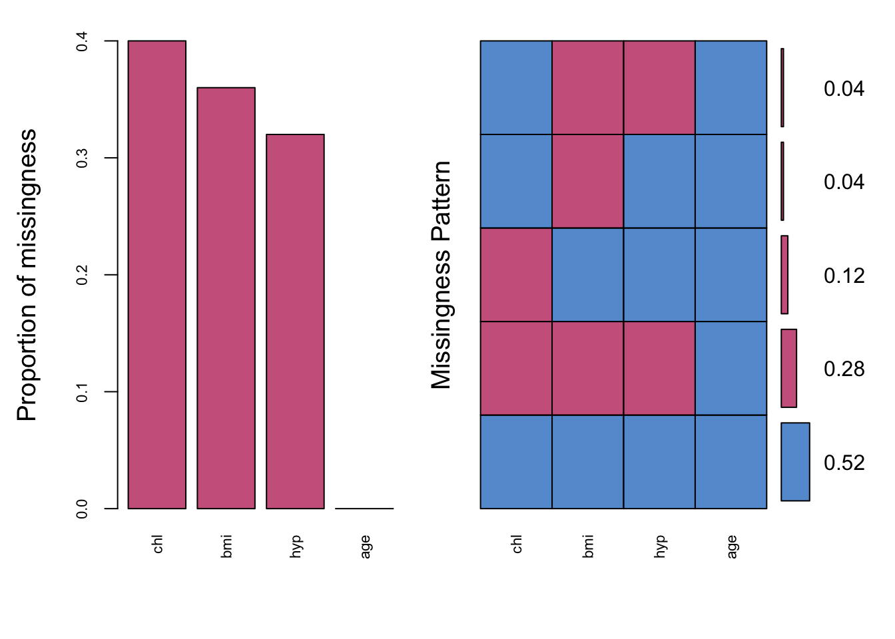
Variables sorted by number of missings:
Variable Count
chl 0.40
bmi 0.36
hyp 0.32
age 0.00The plot showed that almost 52% of the samples are not missing any information. We have made a convenient color choice using col=mdc(1:2), a transparent blue color for the observed data, and a transparent red color for the imputed data. You can change this as you want, for example col=mdc(3:4).
We can also make a margin plot. It plots two variables at the same time and the plot can be used to explore the distribution of missing data and the observed data. Let us look at bmi and chl.
marginplot(nhanes[, c("chl", "bmi")], col = mdc(1:2),
cex.numbers = 1.2, pch = 19)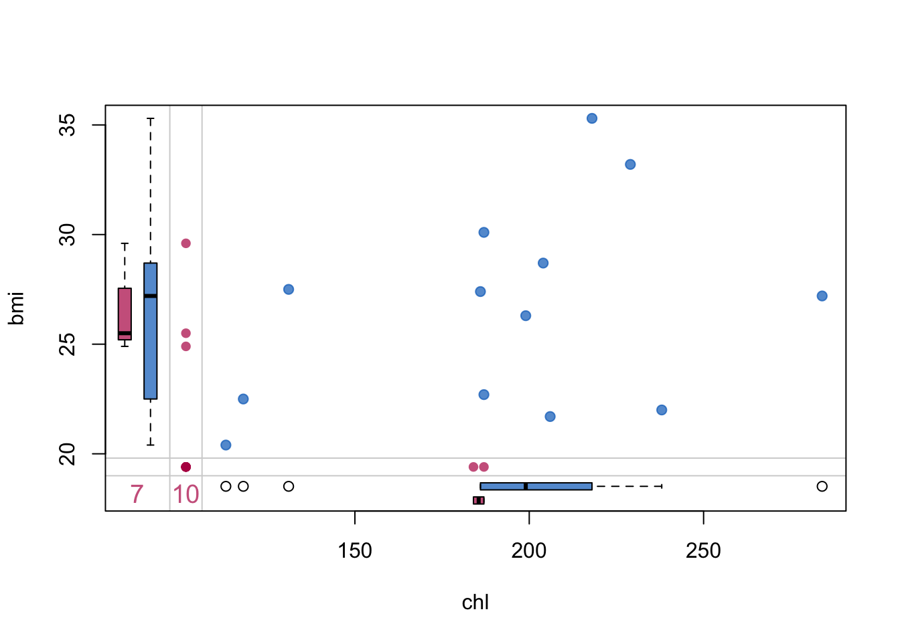
There are 13 blue points for which both bmi and chl were observed. The three red dots in the left margin correspond to the records for which bmi is observed and chl is missing. The bottom margin contains two red points with observed chl and missing bmi. The red dot at the intersection of the bottom and left margin indicates that there are records for which both bmi and chl are missing. There are 7 records in which both are missing. 10 (bottom margin): Indicates the number of missing bmi values (when chl is observed).
The nice thing about a margin plot, is that for each variable it includes a boxplot of the two variables observed
There are other graphs implemented in VIM package for visualizing missing data. Please see Supportive Graphic Methods at your leisure for more details.
Listwise deletion (Complete case analysis)
Suppose we want to fit the following linear regression model to the data, lm(bmi~ age+chl+hyp). The lm() function will automatically remove the missing values before fitting the model.
fit.c <- lm(bmi~ age+chl+hyp, data=nhanes)
summary(fit.c)
Call:
lm(formula = bmi ~ age + chl + hyp, data = nhanes)
Residuals:
Min 1Q Median 3Q Max
-5.9482 -1.1453 0.1893 2.1127 3.6352
Coefficients:
Estimate Std. Error t value Pr(>|t|)
(Intercept) 18.26967 3.82835 4.772 0.00101 **
age -5.78652 1.56876 -3.689 0.00501 **
chl 0.08045 0.02337 3.443 0.00736 **
hyp 2.10468 2.38189 0.884 0.39989
---
Signif. codes: 0 '***' 0.001 '**' 0.01 '*' 0.05 '.' 0.1 ' ' 1
Residual standard error: 3.099 on 9 degrees of freedom
(12 observations deleted due to missingness)
Multiple R-squared: 0.6588, Adjusted R-squared: 0.545
F-statistic: 5.792 on 3 and 9 DF, p-value: 0.01738Note that in the output it says “12 observations deleted due to missingness”. This is, of course, acceptable only if the missing data is MCAR and if it is a small proportion of the whole dataset. But this is not the case here (12/25 is a big proportion), so we want to look for better alternatives.
Exercise 1 (Single imputation)
The mice package provides a plethora of methods for single and multiple imputation
methods(mice) [1] mice.impute.2l.bin mice.impute.2l.lmer
[3] mice.impute.2l.norm mice.impute.2l.pan
[5] mice.impute.2lonly.mean mice.impute.2lonly.norm
[7] mice.impute.2lonly.pmm mice.impute.cart
[9] mice.impute.jomoImpute mice.impute.lasso.logreg
[11] mice.impute.lasso.norm mice.impute.lasso.select.logreg
[13] mice.impute.lasso.select.norm mice.impute.lda
[15] mice.impute.logreg mice.impute.logreg.boot
[17] mice.impute.mean mice.impute.midastouch
[19] mice.impute.mnar.logreg mice.impute.mnar.norm
[21] mice.impute.mpmm mice.impute.norm
[23] mice.impute.norm.boot mice.impute.norm.nob
[25] mice.impute.norm.predict mice.impute.panImpute
[27] mice.impute.passive mice.impute.pmm
[29] mice.impute.polr mice.impute.polyreg
[31] mice.impute.quadratic mice.impute.rf
[33] mice.impute.ri mice.impute.sample
[35] mice.mids mice.theme
see '?methods' for accessing help and source codeLet’s explore some of these. When using mice, both single and multiple imputation follows the pattern:
\[\begin{equation*} mice() ----> with() ----> pool() \end{equation*}\]
mice() imputes each missing value with a plausible value (simulates a value to fill-in the missing one) until all missing values are imputed and dataset is completed. When specified, the process is repeated multiple times and all the complete(d)/imputed datasets are stored in the output.
with() analyses each of the completed data sets separately based on the analysis model you want.
pool() combines (pools) all the results together based on Rubin’s Rules (see lecture notes on missing data).
Mean imputation
Recall that mean imputation consists in replacing missing values on a certain variable by the mean of the available cases.
Task 1a
-
Run the
mice()function on thenhanesdataset, specifying the optionmethod = "mean"andm=1 -
Run the
with()command to fit the linear regressionbmi~ age+chl+hypusing the imputed dataset. -
Pool together the parameter estimates using
pool()and print out a summary of the output. - Does it make sense to pool the results together in this case? Why/why not?
If you don’t know where to start with this task, look at how the mice() —-> with() —-> pool() sequence is performed in the lecture notes and try to mimic that.
Click for solution
imp_mean <- mice(nhanes, method = "mean",m = 1)
iter imp variable
1 1 bmi hyp chl
2 1 bmi hyp chl
3 1 bmi hyp chl
4 1 bmi hyp chl
5 1 bmi hyp chlmodel_mean <- with(imp_mean,lm(bmi~ age+chl+hyp))
summary(pool(model_mean))Warning in pool(model_mean): Number of multiple imputations m = 1. No pooling
done.
Call:
lm(formula = bmi ~ age + chl + hyp)
Residuals:
Min 1Q Median 3Q Max
-6.3120 -1.5890 0.5018 1.7622 5.9258
Coefficients:
Estimate Std. Error t value Pr(>|t|)
(Intercept) 19.63677 3.42047 5.741 1.07e-05 ***
age -2.09083 0.80161 -2.608 0.0164 *
chl 0.05143 0.01894 2.715 0.0130 *
hyp 0.61726 1.86730 0.331 0.7442
---
Signif. codes: 0 '***' 0.001 '**' 0.01 '*' 0.05 '.' 0.1 ' ' 1
Residual standard error: 2.87 on 21 degrees of freedom
Multiple R-squared: 0.3509, Adjusted R-squared: 0.2582
F-statistic: 3.785 on 3 and 21 DF, p-value: 0.02578Notice the warning; Warning: Number of multiple imputations m = 1. No pooling done. This is because we are running a single imputation, but pooling makes sense only for multiple imputations. In fact, doing
summary(model_mean)# A tibble: 4 × 7
term estimate std.error statistic p.value nobs df.residual
<chr> <dbl> <dbl> <dbl> <dbl> <int> <dbl>
1 (Intercept) 19.6 3.42 5.74 0.0000107 25 21
2 age -2.09 0.802 -2.61 0.0164 25 21
3 chl 0.0514 0.0189 2.71 0.0130 25 21
4 hyp 0.617 1.87 0.331 0.744 25 21The completed dataset can be obtained using complete()
data_mean <- complete(imp_mean)We can check that fitting a linear regression using the completed dataset agrees with the linear model above
res_mean <- lm(bmi~ age+chl+hyp, data = data_mean)
summary(res_mean)
Call:
lm(formula = bmi ~ age + chl + hyp, data = data_mean)
Residuals:
Min 1Q Median 3Q Max
-6.3120 -1.5890 0.5018 1.7622 5.9258
Coefficients:
Estimate Std. Error t value Pr(>|t|)
(Intercept) 19.63677 3.42047 5.741 1.07e-05 ***
age -2.09083 0.80161 -2.608 0.0164 *
chl 0.05143 0.01894 2.715 0.0130 *
hyp 0.61726 1.86730 0.331 0.7442
---
Signif. codes: 0 '***' 0.001 '**' 0.01 '*' 0.05 '.' 0.1 ' ' 1
Residual standard error: 2.87 on 21 degrees of freedom
Multiple R-squared: 0.3509, Adjusted R-squared: 0.2582
F-statistic: 3.785 on 3 and 21 DF, p-value: 0.02578One can access the method used for imputation as follows:
imp_mean$method age bmi hyp chl
"" "mean" "mean" "mean" Quite reassuring, as we have used mean imputation.
We can visualize the density of the mean imputed data set
densityplot(imp_mean)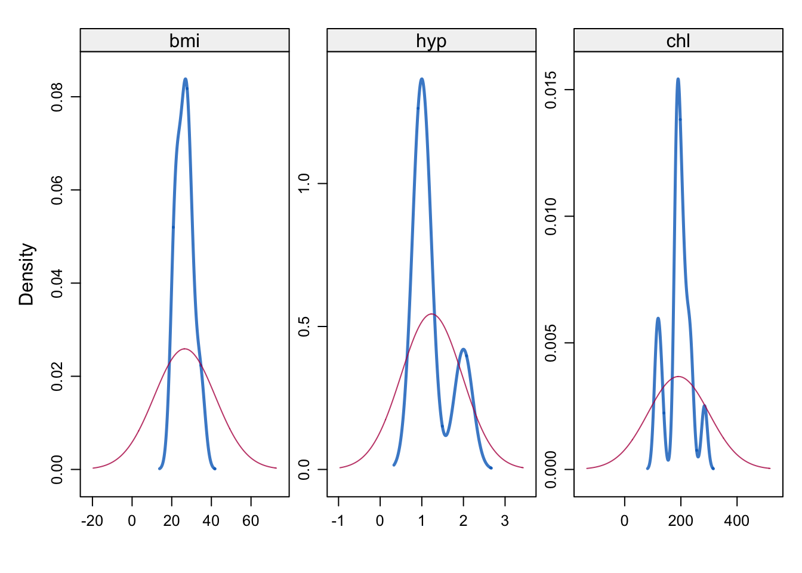
This compares the observed and imputed densities. It seems that the densities are quite different. Perhaps mean imputation is not ideal for the data.
Regression imputation
Regression imputation uses a regression model to estimate the missing values. It can do better than mean imputation because it incorporates knowledge of other variables with the idea of producing more accurate imputations.
Task 1b
-
Perform single imputation using
mice()with an optionmethod = "norm.predict -
Use this imputed dataset to fit a regression of the variable
bmiusing covariatesage+chl+hypas above. How do the coefficient compare with respect to mean imputation? -
Draw a
densityplotof the imputed dataset. Has this method changed the distribution by much?
Click for solution
imp_reg <- mice(nhanes, method = "norm.predict", m = 1, maxit = 1,
seed = 123, print = FALSE)
model_reg <- with(imp_reg,lm(bmi~ age+chl+hyp))
summary(model_reg) # A tibble: 4 × 7
term estimate std.error statistic p.value nobs df.residual
<chr> <dbl> <dbl> <dbl> <dbl> <int> <dbl>
1 (Intercept) 16.6 2.26 7.36 0.000000307 25 21
2 age -6.07 0.678 -8.95 0.0000000130 25 21
3 chl 0.0924 0.0134 6.89 0.000000826 25 21
4 hyp 1.95 1.47 1.33 0.199 25 21If you used the pool() function, you receive the same warning as above: there is no pooling done as we have only imputed one data set (\(m=1\)). However, the output is correct and the same as the one so this is not a problem (but again, the cleanest code would be to just input summary(model_reg)).
We can extract the data completed by the imputation method using complete function. Regression model can then be fitted to this data. You can see that the result is the same as above.
reg_dat <- complete(imp_reg )# extract the completed data set
summary(lm(bmi~ age+chl+hyp, data = reg_dat))# model fitting and summary
Call:
lm(formula = bmi ~ age + chl + hyp, data = reg_dat)
Residuals:
Min 1Q Median 3Q Max
-6.4307 -0.9303 0.2356 1.2856 3.7733
Coefficients:
Estimate Std. Error t value Pr(>|t|)
(Intercept) 16.63816 2.26161 7.357 3.07e-07 ***
age -6.07200 0.67837 -8.951 1.30e-08 ***
chl 0.09239 0.01341 6.891 8.26e-07 ***
hyp 1.94892 1.47043 1.325 0.199
---
Signif. codes: 0 '***' 0.001 '**' 0.01 '*' 0.05 '.' 0.1 ' ' 1
Residual standard error: 2.203 on 21 degrees of freedom
Multiple R-squared: 0.8192, Adjusted R-squared: 0.7934
F-statistic: 31.71 on 3 and 21 DF, p-value: 5.494e-08The fit of the imputation method can be compared using densityplot function as we did with the mean imputation.
densityplot(imp_reg)
Predictive mean matching
Predictive mean matching (PMM) can be used as a single imputation method. It works by replacing missing values with observed values from “similar” cases, where similarity is defined through a predictive model. For a variable with missing data, a regression model is first fitted using the observed cases, and predicted values are computed for both observed and missing observations. For each missing value, a small set of observed cases with predicted values closest to the missing case is identified, and one of their observed values is selected (often at random) and used as the imputation. Because PMM imputes only values that were actually observed, it preserves the variable’s original scale and distribution and avoids implausible extrapolation, while still exploiting relationships with covariates.
Task 1c
-
Perform single imputation using
mice()with the optionmethod="pmm" -
Compare the density plots of
bmifor mean, regression, and PMM imputation. Ensure that the three plots are placed side by side - Fit a regression model to each imputed dataset and compare the coefficients. Which method produces the most plausible results?
Hint: In order to draw the plots side by side you can use par() or check the package gridextra
Click for solution
imp_pmm <- mice(nhanes, method = "pmm", m = 1, maxit = 1)
iter imp variable
1 1 bmi hyp chllibrary(gridExtra)
p1 <- densityplot(imp_pmm)[1]
p2 <- densityplot(imp_reg)[1]
p3 <- densityplot(imp_mean)[1]
grid.arrange(p1, p2, p3, ncol = 3)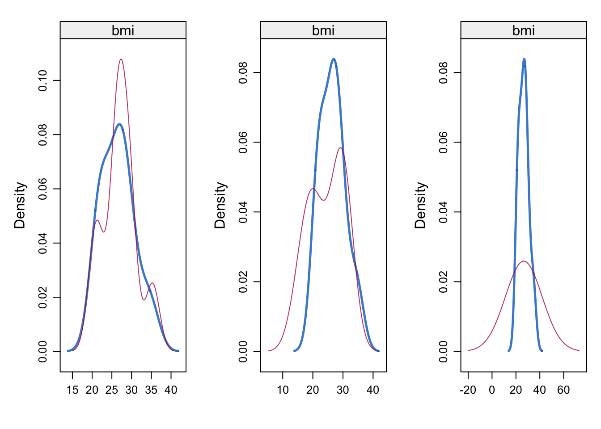
If we want to label the plot, we can do the following
p1 <- update(densityplot(imp_pmm)[1], main = "imp_pmm")
p2 <- update(densityplot(imp_reg)[1], main = "imp_reg")
p3 <- update(densityplot(imp_mean)[1], main = "imp_mean")
grid.arrange(p1, p2, p3, ncol = 3)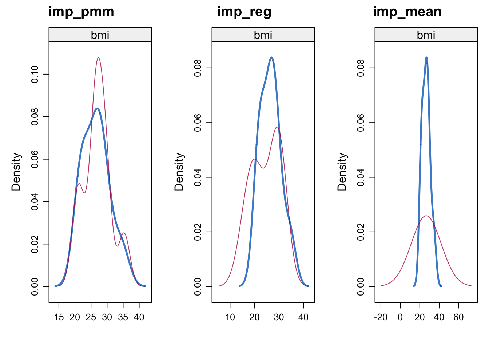
Exercise 2 (Multiple imputation)
We can now step up to multiple imputation. This is done by setting the value of m to the desired number of parallel imputations that we want to make. For example, to create 10 imputed data sets (m=10) via the mice package we can proceed as follows
mice_nhanes <- mice(nhanes, m=10, seed=123)summary(mice_nhanes)Class: mids
Number of multiple imputations: 10
Imputation methods:
age bmi hyp chl
"" "pmm" "pmm" "pmm"
PredictorMatrix:
age bmi hyp chl
age 0 1 1 1
bmi 1 0 1 1
hyp 1 1 0 1
chl 1 1 1 0
We have 10 imputed data sets (\(m=10\)). The default number of iteration (5) is used, and the three variables (age, chl and hypertension) were imputed using predictive mean matching.
The so-called predictor matrix has 0/1 entries. This is a way to specify the set of predictors to be used for each target column. For example, all the variables in the nhanes data set are used to impute chl variable (except chl itself, of course).
We can override the default pmm imputation method by setting a vector of methods:
mice_nhanes2 <- mice(nhanes, m=10, seed=123, method =c("","norm.nob","norm", "pmm") )mice_nhanes2$method age bmi hyp chl
"" "norm.nob" "norm" "pmm"
This implies that we have imputed chl based on Bayesian linear regression (norm) and bmi using Linear regression ignoring model error (norm.nob). Obviously, age is not imputed.
What if we want to impute bmi without using the age variable? To do this, we can either delete age from the data set or modify the predictor matrix. We can extract the predictor matrix as follows:
pred <- mice_nhanes$predictorMatrix
predTo impute bmi without the age variable, we can modify the predictor matrix to exclude age as a predictor for bmi
pred["bmi", "age"] <- 0
print(pred) #Checks the updated predictor matrix age bmi hyp chl
age 0 1 1 1
bmi 0 0 1 1
hyp 1 1 0 1
chl 1 1 1 0Now that age is excluded from the covariates, we can use the modified predictor matrix for the imputation process as follows:
mice_nhanes4 <- mice(nhanes, m = 10, seed = 123, predictorMatrix = pred)
summary(mice_nhanes4)
We can inspect the distribution of original and imputed data using xyplot:
xyplot(mice_nhanes, bmi ~ chl | .imp, pch = 20, cex = 1.4)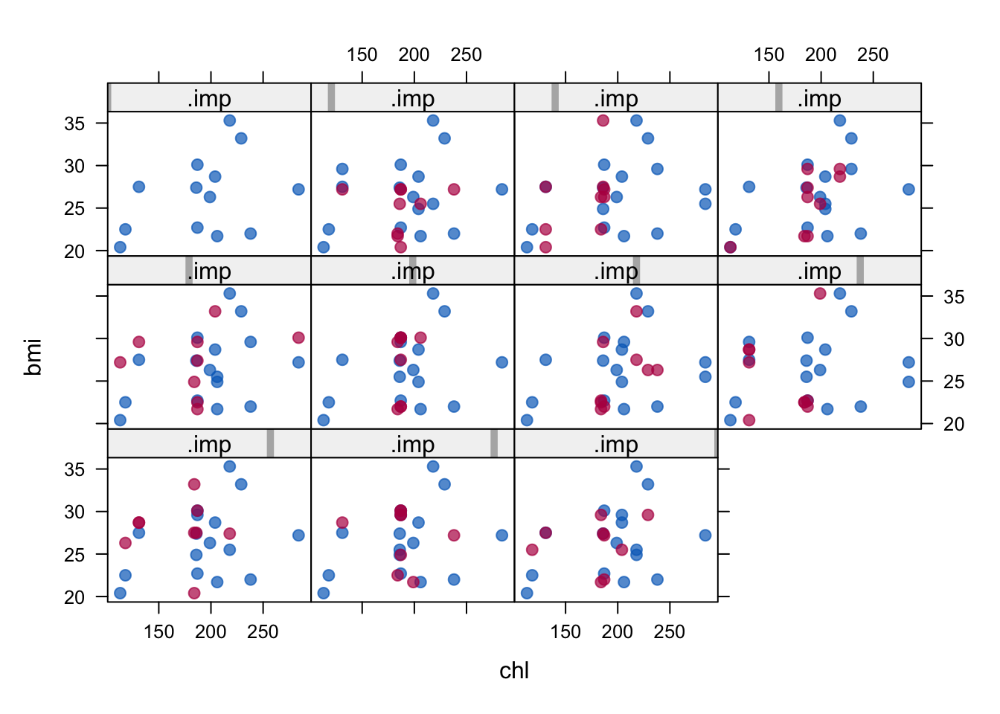
What we would like to see is that the position of the red points (imputed) does not distort the features of the scatterplot with only the blue points (observed). The matching shape tells us that the imputed values are indeed plausible values. The density plot used for single imputation can also be used here:
densityplot(mice_nhanes)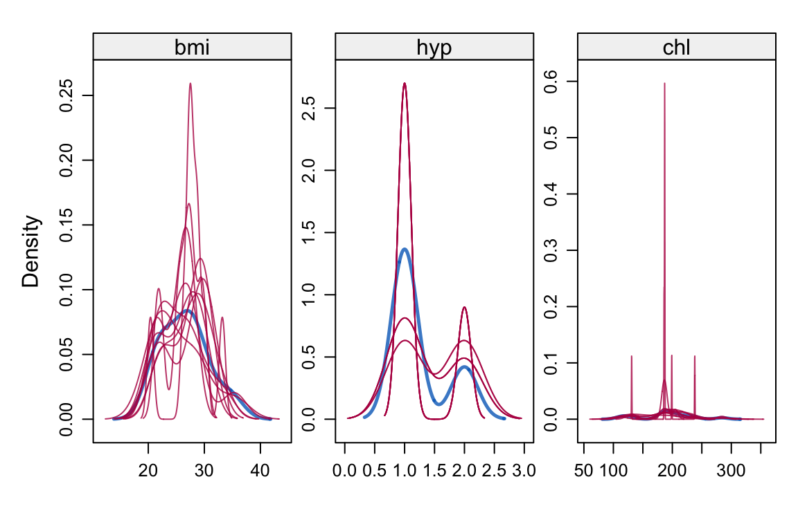
The next step in the analysis is to use the with() function. This will now fit 10 separate linear regression models to each of the imputed data sets:
model_final <- with(mice_nhanes,lm(bmi~ age+chl+hyp))
model_finalWe cannot make sense of the 10 separate analyses (results) except we combine them in some way. That is where the Rubin's Rules seen in lectures enter into play. The parameter estimates are averaged over the 10 results. The standard errors are combined by averaging within-imputation variance and between-imputation variance (see lectures). This responds to the need to take into account two sources of variability: the variability within each imputed data sets and variability between the 10 imputed data sets.
Task 2a
-
Calculate the average of the estimated parameters (
(Intercept), age, chl, hyp) over the 10 analyses. -
Compare the estimates with the output of
summary(pool(model_final)). What can you see?
Click for solution
To manually extract the coefficients from a given model, we have to look inside the model_final output
model_final$analyses[[1]]$coefficients(Intercept) age chl hyp
21.84881821 -2.57565537 0.04382633 0.26258315 Alternatively, one can use the output of the summary to build a data set that has all the estimates in a unique variable called estimate
coeff <- summary(model_final)Then, we compute the average for the observations belonging to the estimates of the same coefficients
mean(coeff$estimate[coeff$term == "(Intercept)"])[1] 20.25634mean(coeff$estimate[coeff$term == "age"])[1] -3.702813mean(coeff$estimate[coeff$term == "chl"])[1] 0.05643052mean(coeff$estimate[coeff$term == "hyp"])[1] 1.574474Even quicker, we can do all at the same time using aggregate
aggregate(estimate ~ term, data = coeff, mean) term estimate
1 (Intercept) 20.25633745
2 age -3.70281280
3 chl 0.05643052
4 hyp 1.57447405Even if we are able to compute the average for the terms, the computation of the standard errors is not straightforward. Instead, we shall use the pool function in mice to summarize the 10 results:
summary(pool(model_final)) term estimate std.error statistic df p.value
1 (Intercept) 20.25633745 3.57914955 5.6595393 14.453645 5.220259e-05
2 age -3.70281280 1.27110597 -2.9130638 9.428827 1.642428e-02
3 chl 0.05643052 0.01901666 2.9674261 14.851278 9.670916e-03
4 hyp 1.57447405 2.07581749 0.7584839 10.772710 4.644325e-01Note that the estimates coincide with those manually calculated above!
The random forest method
We have seen that the random forest imputation method is implemented in mice. Imputation using random forests fills in missing values by training a random forest model on the observed data for each variable with missing values. Then using the model’s predictions to replace the missing entries. Because random forests can capture nonlinear relationships and interactions among variables without requiring parametric assumptions, this approach often produces more realistic imputations than mean or regression-based methods.
We see here an example of simple imputation using random forests. However, keep in mind that if random forests are to be used for inference, then simple imputation with random forests leads to overconfidence (too small variance), so it is better to use multiple imputation in that case.
Task 2b
-
Impute the
nhanesdataset using random forests. Use only one model and three trees. - Create a density plot and assess the imputation.
- Next, increase the number of trees to 100 and generate another density plot. Does the number of trees affect the density plots?
Click for solution
The random forest method is calle using method = "rf" and the number of trees is specified as ntree = 3
imp_rf_3 <- mice(nhanes, m=1, seed=123, method = "rf", ntree = 3)
iter imp variable
1 1 bmi hyp chl
2 1 bmi hyp chl
3 1 bmi hyp chl
4 1 bmi hyp chl
5 1 bmi hyp chldensityplot(imp_rf_3)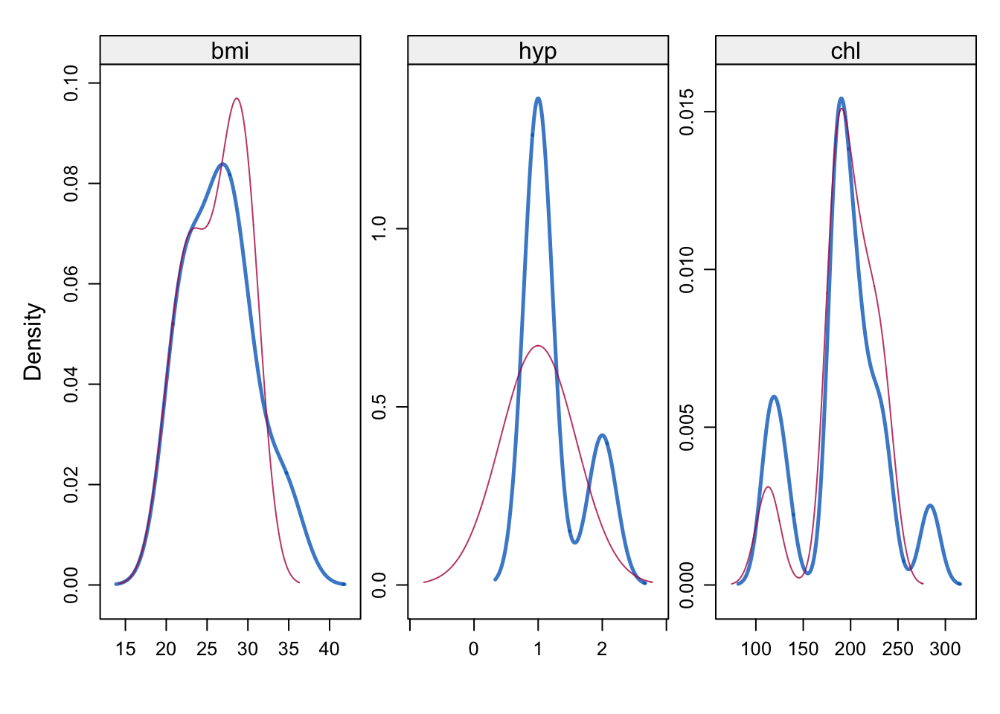
By changing the number of trees to 100 we compute
imp_rf_100 <- mice(nhanes, m=1, seed=123, method = "rf", ntree = 100)
iter imp variable
1 1 bmi hyp chl
2 1 bmi hyp chl
3 1 bmi hyp chl
4 1 bmi hyp chl
5 1 bmi hyp chland we can redraw the density plots
densityplot(imp_rf_100)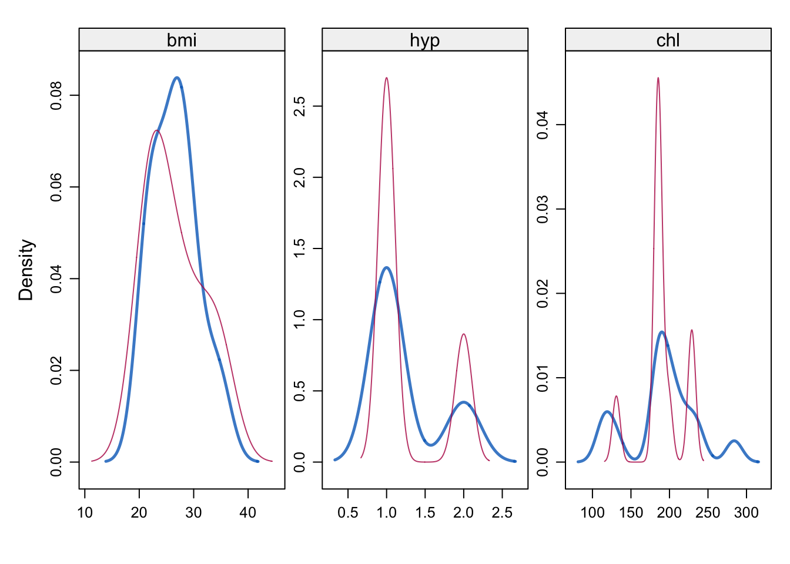
Exercise 3 (Air quality)
In this exercise, you will work through an example of dealing with missing data using the airquality data. This contains 153 observations of 6 variables. We will explore the data and use both single and multiple imputation techniques
data(airquality)
head(airquality) Ozone Solar.R Wind Temp Month Day
1 41 190 7.4 67 5 1
2 36 118 8.0 72 5 2
3 12 149 12.6 74 5 3
4 18 313 11.5 62 5 4
5 NA NA 14.3 56 5 5
6 28 NA 14.9 66 5 6
The first step is to explore the missing data pattern.
Task 3a
-
Use
md.pattern()andmd.pairs()to explore the missing data pattern. What do you see? - Draw a margin plot of the two variables with missing data. Which features emerge from the plot?
- Can you try to make some hypotheses about the reason data is missing as well as about the missing data mechanisms?
Click for solution
md.pattern(airquality)
Wind Temp Month Day Solar.R Ozone
111 1 1 1 1 1 1 0
35 1 1 1 1 1 0 1
5 1 1 1 1 0 1 1
2 1 1 1 1 0 0 2
0 0 0 0 7 37 44md.pairs(airquality)$rr
Ozone Solar.R Wind Temp Month Day
Ozone 116 111 116 116 116 116
Solar.R 111 146 146 146 146 146
Wind 116 146 153 153 153 153
Temp 116 146 153 153 153 153
Month 116 146 153 153 153 153
Day 116 146 153 153 153 153
$rm
Ozone Solar.R Wind Temp Month Day
Ozone 0 5 0 0 0 0
Solar.R 35 0 0 0 0 0
Wind 37 7 0 0 0 0
Temp 37 7 0 0 0 0
Month 37 7 0 0 0 0
Day 37 7 0 0 0 0
$mr
Ozone Solar.R Wind Temp Month Day
Ozone 0 35 37 37 37 37
Solar.R 5 0 7 7 7 7
Wind 0 0 0 0 0 0
Temp 0 0 0 0 0 0
Month 0 0 0 0 0 0
Day 0 0 0 0 0 0
$mm
Ozone Solar.R Wind Temp Month Day
Ozone 37 2 0 0 0 0
Solar.R 2 7 0 0 0 0
Wind 0 0 0 0 0 0
Temp 0 0 0 0 0 0
Month 0 0 0 0 0 0
Day 0 0 0 0 0 0We can see that there are 111 complete cases (as shown in the left and right columns). A zero in the last column indicates there are no missing values. The second row indicates that there are 35 patterns with only one missing value (Ozone). In the third row we have 5 patterns with only one missing value, which is on Solar.R. Only two patterns have two missing values, which are on Solar.R and Ozone.
The last row tells us how many values are missing from each variable (column). No value is missing on Wind, Temp, Month and Day, 7 observations are missing on Solar.R and 37 missing on Ozone. Overall, 44 observations are missing out of 153.
marginplot(airquality[, c("Solar.R", "Ozone")], col = mdc(1:2), cex.numbers = 1.2, pch = 19)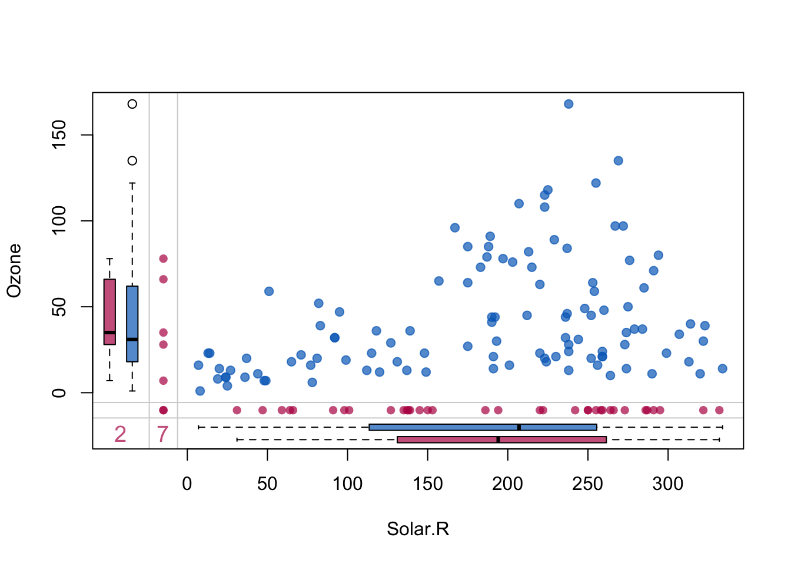
The blue box plots summarize the distribution of observed data given the other variable is observed, and red box plots summarize the distribution of observed data given the other variable is missing.
The five red dots in the left margin correspond to the records for which Ozone is observed and Solar.R is missing. Notice that the points are drawn at the known values of Ozone. Similarly, the bottom margin contains red points with observed Solar.R and missing Ozone. There are 7 observations in which Solar.R is missing and 2 records in which both are missing (records 5 & 27).
As the red and blue distributions are not very different, the marginplot does not provide strong evidence for MAR mechanism, but it can not be ruled out either.
Some plausible explanations for missingness are:
- Instrument or recording failures (MCAR) Measurements of Ozone and Solar.R relied on monitoring equipment that could malfunction, be improperly calibrated, or fail intermittently, leading to missing readings on certain days. If the malfunctioning is related to observable weather conditions, then the mechanism is MAR.
- Weather-related constraints (plausible MAR) Some meteorological conditions (e.g. heavy cloud cover, storms) can prevent reliable measurement of solar radiation and indirectly affect ozone monitoring, resulting in missing values.
- Operational gaps (MCAR or MAR) Data may not have been collected every day due to staffing limitations, maintenance, or reporting delays, especially earlier on, when automated monitoring was less robust. If gaps are more likely during specific months or seasons then the mechanism is MAR.
- Dependence on observed variables (MAR) Missingness in Ozone or Solar.R appears related to seasonal patterns, temperature, and wind, which are observed variables—making a Missing At Random (MAR) mechanism plausible.
Suppose we want to fit the linear regression model to the airquality data, lm(Ozone ~ Wind + Temp + Solar.R). With complete case analysis (the default option), there would be 42 deleted observations. This leads to bias in the analysis if the missingness process is not MCAR. Even if the data is MCAR, the fit of the model may be quite poor. We’d rather fit the linear regression using multiple imputation by chained equations (MICE).
Task 3b
-
Use
miceto perform multiple imputation of theairqualitydata. Choose your preferredmethod,mandmaxitvalues. -
Now, run the same command, but change it in such a way that the variables
DayandMonthare not used in the imputation process. -
Finally, change the code in such a way that the imputation methods for
Ozoneis set tonormand forSolar.Ris set tonorm.nob(linear regression ignoring model error). - Compare the density plots in the three cases. How does the picture change in the three cases?
Click for solution
We can fit a multiple imputation with Bayesian linear regression and 5 imputed datasets.
mice_air1 <- mice(airquality, method = "pmm",m = 5)To exclude the Day and Month variable from the imputation, we change the predictorMatrix
pred_air <- mice_air1$predictorMatrix
pred_air[, c("Month","Day")] <- c(0,0)
pred_air Ozone Solar.R Wind Temp Month Day
Ozone 0 1 1 1 0 0
Solar.R 1 0 1 1 0 0
Wind 1 1 0 1 0 0
Temp 1 1 1 0 0 0
Month 1 1 1 1 0 0
Day 1 1 1 1 0 0then we run the multiple imputation with the new matrix
mice_air2 <- mice(airquality, method = "pmm",m = 5, predictorMatrix = pred_air)Finally, we can differentiate the imputation method by inputing a vector of methods instead of a single method
mice_air3<- mice(airquality, m = 5,
method =c("norm","norm.nob","", "", "",""),
predictorMatrix = pred_air)p1 <- densityplot(mice_air1)[1]
p2 <- densityplot(mice_air2)[1]
p3 <- densityplot(mice_air3)[1]
q1 <- densityplot(mice_air1)[2]
q2 <- densityplot(mice_air2)[2]
q3 <- densityplot(mice_air3)[2]
grid.arrange(p1, p2, p3, q1, q2, q3, ncol = 3, nrow = 2)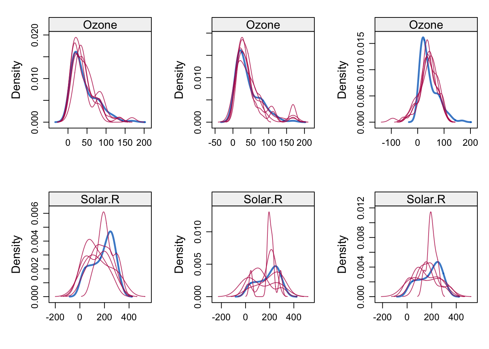
Day and Month makes sense both conceptually and in terms of visual results.
Remember that creating the different imputed data sets is just the first step of MI. Carrying the analysis and pooling the results is required for the process to make sense. This is the content of your final task:
Task 3c
-
Extract the best set of imputations from Task 3b. Then, use the
with()function in to fit separate linear regression models to each of the imputed data sets -
Then, use the
pool()function to summarize the 10 results. - Compare the results with those obtained by fitting the linear model only on complete cases. Which estimates differ and why? Which SEs are larger?
Click for solution
model_final <- with(mice_air2,lm(Ozone ~ Wind + Temp + Solar.R))This is what we get as estimate from the multiple imputation
summary(pool(model_final)) term estimate std.error statistic df p.value
1 (Intercept) -74.43442155 26.79030126 -2.778409 19.65930 1.172048e-02
2 Wind -2.93234227 0.70977278 -4.131382 32.20605 2.395603e-04
3 Temp 1.73105798 0.29198912 5.928502 21.74834 6.032614e-06
4 Solar.R 0.06028454 0.02301146 2.619761 85.61616 1.040772e-02This is what we get from complete case analysis
fit_cc <- lm(Ozone ~ Wind + Temp + Solar.R,
data = airquality,
na.action = na.omit)
summary(fit_cc)
Call:
lm(formula = Ozone ~ Wind + Temp + Solar.R, data = airquality,
na.action = na.omit)
Residuals:
Min 1Q Median 3Q Max
-40.485 -14.219 -3.551 10.097 95.619
Coefficients:
Estimate Std. Error t value Pr(>|t|)
(Intercept) -64.34208 23.05472 -2.791 0.00623 **
Wind -3.33359 0.65441 -5.094 1.52e-06 ***
Temp 1.65209 0.25353 6.516 2.42e-09 ***
Solar.R 0.05982 0.02319 2.580 0.01124 *
---
Signif. codes: 0 '***' 0.001 '**' 0.01 '*' 0.05 '.' 0.1 ' ' 1
Residual standard error: 21.18 on 107 degrees of freedom
(42 observations deleted due to missingness)
Multiple R-squared: 0.6059, Adjusted R-squared: 0.5948
F-statistic: 54.83 on 3 and 107 DF, p-value: < 2.2e-16